I’ve been using Stable Diffusion a lot lately for image generation and inspiration as it can generate images by textural description.
Stable Diffusion creates images based on user prompts. A common example prompt is “an astronaut riding a horse”. That image is impossible to photograph and highly unlikely to have been previously seen by stable diffusion during training, so with high certainty it’s completly generated.
This is an image I’ve genererated with the prompt “Star Trek Enterprise landing on castle Neuschwannstein”
{kind=link}
Naturally you wonder how that works. This has led me down a path of recapitulating tricks from the A.I field that I’ve come across over the years.
Below are some of tricks I find useful. Some of which I’ve implemented in short handy code snippets.
Contents
Contents
History
Not long ago we have been arguining if computers could create art, just as we argued over whether computers could play chess or could win a game show called “Jeopardy” - ironically the best current human at Jeopardy, that has been beaten by a computer, is a computer scientist by trait.
The “Turing Test” was a test proposed in the ’50s. If a human talks to a machine, for example a chat bot and doesn’t realise he is talking to a machine, then that machine ought to be intelligent. That challenge was also beaten some years ago.
Artificial General Intelligence
With the fast advancements came fears of the “Artificial General Intelligence” (AGI) and that we could be replaced and overrun by machines.
Looking at how the technology works I don’t believe we are anywhere near this. But the fear of an AGI has led to hype and to funding more research in A.I.
One non-profit company even had the goal of making their research publically available, but have then founded a profit-oriented subsidary and have now likely gone bust.
What even is Artificial Intelligence
A lot of the missconceptions and hype seem to come from the uninformed. It’s ironic that there isn’t even a proper concrete definition of what intelligence even is.
So how would we be able to say what artificial intelligence is and what constitutes achieving it? Is the goal to do “everything” better than humans? If so then better than humans that are expert in their field or the average person? And isn’t it enough for an A.I to be unmatche in one field? The latter we have already achieved in many fields for example computers can solve math problems many times faster than any human.
We test intelligence with “intelligence quotient” (IQ) tests, but these test aim to remove all culteral and social context in order to be comparable between cultures. Ironically this leaves us with simple pattern completion tasks like completing number sequences, ordering images or finding relations between words - all tasks where computers today excel. Does that make a computer intelligent? Or are we seeing the intelligence of the developer in the software?
And can a simple smart home thermostat be considered intelligent?
Moving past the hype
We currently have
-
ChatGPT produces text based on user prompts. It delivers surprising results, but without any real understanding or objective in what it writes. It has no opinion, gives different answers when asked about the same movie and doesn’t give reliably correct answers. It is a sophisticates text generator that mixes input text it has seen into convincing output.
-
Google DeepDream produces “dreamy” images based on the data it was trained on. When trained with dogs and shown an image of clouds it interprets images of dogs into the clouds. The results are astonishing and some are arguably art.
-
Stable Diffussion takes text prompts and creates images out of them. It comes up with mixtures of images that are appear totally unique. We will see below that this works by combining a row of techniques in A.I. research.
all of which apply decades of reasearch and make heavy use of artificial neural networks.
In Academia
It’s interesting that in academia the word “Artificial Intelligence” isn’t commonly used due to it’s ambiguity.
There the terms “Pattern Recognition”, “Machine Learning” or “Medical Image Processing” are used. Depending on if you’re talking to an Electrical Engineer, to a Computer Scientist or a Medical Technician.
While the above three well known break-throughs apply Neural Networks, academia goes well beyond.
Artificial neural networks were first discovered in the 40’s. As with most technologies also neural networks followed the hype cycle.
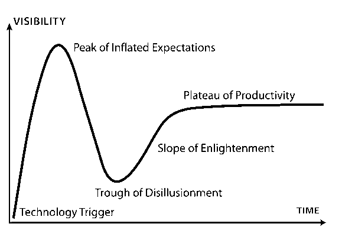
(Image taken from [3])
There was a brief period of large interest, because it was mathimatically proven that they can, in theory, solve all computable problems, but the interest quickly died off due to the lack of compute power at the time to use them for anything useful.
With the advent of Bitcoin and blockchain it was possible to make an adequate return-on-invest when buying powerful graphics cards to mine cryptocurrencies. Those days are mostly over, but the jump in compute power helped artificial neural networks come along.
Classic Approaches
There are a whole row of techniques that are taught at universities for solving tough computational problems in the above fields that don’t necessarily rely on neural networks.
- Dimensionality Reduction
- Bayes Classifier
- Markow Chains
- Regression and Polynom-Fitting
- Gaussian Mixture Models
- Adaboost
- Fourier Transforms
for
- Image Denoising, Classification, Segmentation, Alignment
- Localisation and Mapping
- Natural Language Processing, Spellchecking
- Text-to-Speech, Speech-to-Text, Text-Recognition
- and many more
Foundations
As with most technologies also the new “ChatGPT” from OpenAI, “DeepDream” from Google and “StableDiffusion” from a research group at LMU Munich are built on a foundation of this reasearch from the decades before.
Artificial Neural Networks
Artificial Neural Networks, first researched in the 40’s, are inspired by the brain of mammals.
In short an Artifical Neural Network consists of a network of neurons. They have an input layer where data is fed into it. And an output layer from which data can be retrieved. Inbetween can be any number of hidden layers. The connections between the neurons can be varied according to use-case.
We can push text, images or any other forms of data through a neural net.
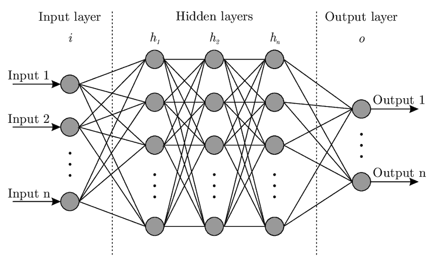
Each circle in the image holds the sum of it’s inputs. The lines apply weighting.
The power comes from sophisticated algorithms (“back propagation”) that can minimize the loss (=difference) between input and output during training (usually a least-squares loss-function is minimized) by adjusting these weights.
We can intuitively see that if we were to apply numbers, say 3 and 5 as inputs and train the network long enough, thereby adjusting the weights, it will output an 8.
If we do that for more numbers it may eventually “generalize” to be able to solve unseen combinations of higher digit numbers much like a human learns addition by repetition.
This approach can be applied to many problems. For any relation f(x) = y the neural network finds the function “f” for us.
This holds true for the above example as addition can be represented as f_addition([3,5]) = [8].
Classification
A classic problem is classification. You are given a data set, for instance “red” or “blue” flowers, and you want the computer to sort the images into bins according to “red” or “blue”. This was surprisingly difficult for a computer to do for a very long time.
Supervised and Unsupervised
For the above problem we can train a model on labeled training data - a large set of images that have been manually labelled “red” or “blue” beforehand. This is called supervised learning.
The problem becomes harder when we remove the supervision and the system has to learn to group the data into categories without knowing what the categories are before hand.
Finding a separating line
Mathematically speaking we have points in a space and we want to draw a line to separate the points.
Then, for future incoming data, we can compute the corresponding point in the space and check if it is above or below that line. That yields the result of the classification.
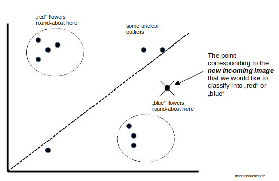
The task is thus to map incoming data into a high-dimensional space (it can have 300 dimensions or more, not just 2 as in the image) and then cleverly reduce the dimensions to 2D or 3D. In essence finding a rotation, a viewing angle on the points, so we can properly draw a dividing line.
As you can see the distance of the new point to the average location of all “blue” points” is lower than to the average location of all “red” points.
We can then use the euclidean distance.
distance_red = sqrt( (x_red_mean - x_of_image_to_classify)^2 + (y_red_mean - y_of_image_to_classify)^2 )
distance_blue = sqrt( (x_blue_mean - x_of_image_to_classify)^2 + (y_blue_mean - y_of_image_to_classify)^2 )
It relies on squaring to sure we don’t run into issues mixing positive and negative values. The square root reverses this on the result and can be removed in our use-case as we only care which value is relatively lower.
The classification result is then given by:
if distance_blue < distance_red:
return "blue"
else
return "red"
Principle Component Analysis
We’ve established that we need some “transform” to convert an image into a coordinate space
(x, y, ...) = transform(image)
and then need to rotate that space so that we can draw a clean dividing line between our groups.
One way to do this is by looking at the eigenvectors and eigenvalues.
Intuitively we’re trying to find the direction of a point cloud in space. Or put differently the direction of its highest spread.
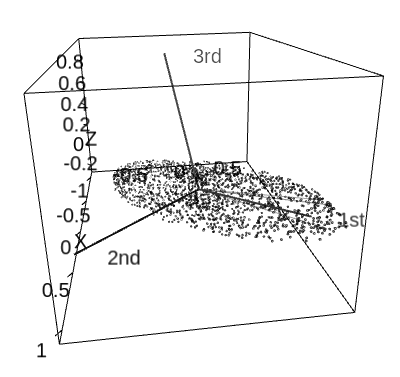
(Image taken from [4])
Eigenvectors solve this problem for us. They point in the direction of spread. The Eigenvalues are the respective magnitues. So sorting the Eigenvectors by Eigenvalue gives us the first and second largest (or any more for that matter) direction of spread.
The “transform” is just rotationg to the direction of the Eigenvector.
The approach is also known as the “Eigenfaces-Approach”, because we can apply it to images of Human faces and realize that we only need the first 3-5 Eigenvectors to represent almost all faces appart from asymmetric details. This is used for charcter builders in video games and creating mugshots.
Calculating Eigenvectors and Eigenvalues
We need to calculate the Eigenvectors and Eigenvalues. This can be achieved with the “Singular Value Decomposition” (SVD). In essense the input values are copied into matrices, some of which are transposed that we multiply with one another and then read the result from.
Most math software packages have an algorithm for this built-in that we can use.
For instance with Python Numpy
numpy.linalg.svd
Other Approaches
Another approach is the “Support Vector Machine”. It tries to widden the dividing line as far as possible inbetween points.
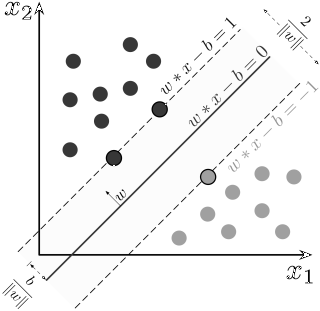
(Image taken from [5])
Therea are of course many more approaches to solve this problem. Depending on the problem some outperform others.
Tricks
Some of the previously toughest problems of computer science can now be elegantly solved with neural networks.
It is useful to have these solutions at hand and to be able to quickly recombine them to be able to apply them to new problems.
The following sections are structured as description, problem statment, input data, implementation and evaluation.
Auto-Encoder
By applying artificial neural networks we can achieve similar results to the “Principle Component Analysis” (PCA) mentioned above. It can also be used to find a viewing angle onto a high-dimensional space such that the spread of the points are maximized which in turn allows us to draw a separating line that enables us to do classification.
Problem Statement
There’s a browser Flash game from ‘99 from Neopets “Zeichen der Magie” in German (something with Sorcerer in Englisch). The objective is to click on numbers on a playing field in an increasing sequence. Automating that game and trying out different algorithms on it has been a a pet project for a long time.
In order to automate the game I’ve already built an algorithm based on Depth-First-Search, essentially by translating the playing field into a directed graph and then traversing it to find the deepest path. But in order for this to actually automatically play I need to recognize the digits on the field.
Input
For this I have a large set of digits that I’ve extracted nad need to classify into 0..9.
{kind=link}
In the training set I’ve done this by hand. The challenge is when a new unseen image is needs to be classified.
The Images need to be loaded into one big Matrix. The columns are the pixels one after the other. We treat the input images as a row of numbers. The rows are for an image each.
Also the images are converted to black and white by deviation from brown (r:100, g:50, b:0). I’ve set this specifically for the Neopets game.
IMAGE_DIR="<image directory>"
import glob
from PIL import Image
import numpy
threshold = 65 # deviation from brown
images = glob.glob(IMAGE_DIR + "*.png")
width,height = Image.open(images[0]).size
def load_image_into_matrix(image_filename,image_number, A):
img = Image.open(image_filename).convert('RGB')
for x in range(0, img.width):
for y in range(0, img.width):
r, g, b = img.getpixel((x,y))
if r > 100 - threshold and r < 100 + threshold:
if g > 50 - threshold and g < 50 +threshold:
if b > 0 - threshold and b < 0 + threshold:
A[x*y, image_number] = 1
continue
A[x*y, image_number] = 0
A = numpy.zeros((width*height, len(images)))
for image_number, image_filename in enumerate(images):
load_image_into_matrix(image_filename, image_number, A)
print("Done")
PCA Implementation
For PCA we needed to compute large Matrices and then calculate Eigenvalues and Eigenvectors by “Singular Value Decomposition”.
Training
First we compute the average image or mean_face:
import numpy
rows,cols = numpy.shape(A)
mean_face = A.mean(axis=1)
Then we subtract the average image from each image individually
B = (A.transpose() - mean_face)
We then move on to computing the Singular Value Decomposition using the Pythons Numpy package:
L = numpy.dot(B, B.transpose())
u, eig_val, vt = numpy.linalg.svd(B, full_matrices=True)
eig_vec = vt.transpose()
And sort the Eigenvectors by the Eigenvalues
ind = numpy.argsort(s)[::-1]
u = u[:, ind]
eig_val = eig_val[ind]
eig_vec = eig_vec[:, ind]
Classification
The dot-Product of a new image with the largest two eigenvectors are our weights.
def getCoordinateOfImage(image_filename):
B = numpy.zeros((image_length, 1))
load_image_into_matrix(image_filename, 0, B)
weight_a = numpy.dot(eig_vec[:,0], B)
weight_b = numpy.dot(eig_vec[:,1], B)
return (weight_a, weight_b)
Evaluation
Plotting that out we can see that it worked well.
All 0’s, 1’s, 5’s are in one location. The image for classification, marked with an ‘x’, that is infact a 4, is in the right location.
However the 4’s and 3’s can’t be distinguished well as the two groups are interleaved.
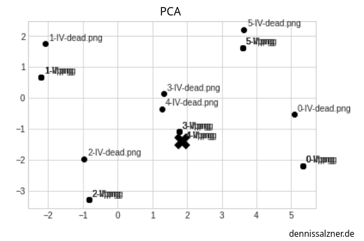
Auto-Encoder Implementation
The approach to solving this with Neural Networks is the so-called “Auto-Encoder”.
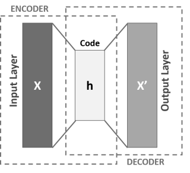
Image taken from [6])
The idea is to feed the input images into the input layer, send them through a much smaller hidden layer (the “latent space”) and then back to an output layer of the same size as the input layer. The input and output layers have the same number of Neurons as the Images have pixels. The hidden layer has only two Neurons for two Dimensions.
import tensorflow.compat.v1 as tf
tf.disable_v2_behavior()
from tf_slim.layers import layers as _layers;
num_input = image_length
num_hidden = 2 # -- for two dimensions
num_output = image_length
input_layer = tf.placeholder(tf.float32, shape=[None, num_input])
hidden_layer = _layers.fully_connected(input_layer, num_hidden, activation_fn=None)
output_layer = _layers.fully_connected(hidden_layer, num_output, activation_fn=None)
Training
Now all we have to do is set up a mean loss function between input and output and train the network.
loss = tf.reduce_mean(tf.square(output_layer - input_layer))
optimizer = tf.compat.v1.train.AdamOptimizer(learning_rate).minimize(loss)
and running it, for example, for 5000 iterations
num_steps = 5000
with tf.Session() as sess:
sess.run(tf.global_variables_initializer())
for i in range(num_steps):
sess.run(optimizer, feed_dict={input_layer: A.transpose()})
Classification
In order to classify a new image, I’ve defined a similiar function as above.
It pushes the image into the Neural Net the same as during training, but ignores the output layer and reads the data from hidden Layer.
def getAutoEncoderCoordinateOfImage(image_filename):
B = numpy.zeros((image_length, 1))
load_image_into_matrix(image_filename, 0, B)
output_ = hidden_layer.eval(feed_dict={input_layer: B.transpose()})
return (output_[0][0], output_[0][1])
Evaluation
Plotting that out we see we get a slightly better result - we have a better chance of distinguishing 3’s from 4’s.
It also took a lot less though work on my side, but with 5000 iterations we’re trading in computational effort.
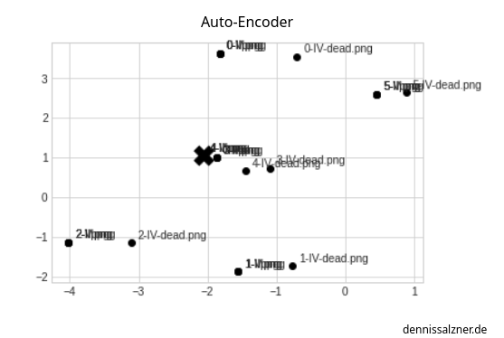
Recurrent Neural Networks
Recurrent Neural Networks can be used for text generation.
For training a portion of text is used as input. The expected output is that same input, but shifted by a character forward.
The idea is that the Neural Network will learn the underlying patterns of text and that after some training it can continue a passage of text by extending it in a grammatically correct manner.
Problem Statement
We want to enter a text prompt and the Neural Net should continue that text in a grammatically correct manner.
Input
For input we need a bunch of text files. I’m using my Markdown notes.
import glob
NOTES_DIR = "<notes directory>"
note_files = glob.glob(NOTES_DIR + "**/*.md", recursive=True)
text = ""
for note_file in note_files:
with open(note_file, encoding='utf-8', errors='ignore') as f:
text += f.read()
chars = sorted(list(set(text)))
char_indices = dict((c, i) for i, c in enumerate(chars))
indices_char = dict((i, c) for i, c in enumerate(chars))
We split that into sections of 40 chars and make and create X and Y the way we expect the output to be.
Once trained the Neural Network will act as a function f_neuralNetwork(X_currentText) = Y_textContinuation.
import numpy as np
maxlen = 40
step = 3
sentences = []
next_chars = []
for i in range(0, len(text) - maxlen, step):
sentences.append(text[i: i + maxlen])
next_chars.append(text[i + maxlen])
x = np.zeros((len(sentences), maxlen, len(chars)), dtype=bool)
y = np.zeros((len(sentences), len(chars)), dtype=bool)
for i, sentence in enumerate(sentences):
for t, char in enumerate(sentence):
x[i, t, char_indices[char]] = 1
y[i, char_indices[next_chars[i]]] = 1
(this code is not written by myself. I’ve found it on numerous pages, I don’t know who to credit for it)
Neural Network Implementation
We then setup the Neural Net. There are different ways of doing this.
I’m using a “Long Short-Term Memory” (LTSM) layer as that seems to be the most promising.
import tensorflow as tf
from tensorflow.keras import layers
model = tf.keras.models.Sequential()
model.add(layers.LSTM(128, input_shape=(maxlen, len(chars))))
model.add(layers.Dense(len(chars), activation="softmax"))
model.compile(loss="categorical_crossentropy", optimizer="adam")
Training
Next we train the net. This takes forever without GPU acceleration.
for epoch in range(1, 30):
model.fit(x, y, batch_size=128)
Text Generation
Once done we can generate some text by entering in random passages of the input text.
With this helper function
def generate_text(length, diversity):
start_index = random.randint(0, len(text) - maxlen - 1)
generated = ''
sentence = text[start_index: start_index + maxlen]
generated += sentence
for i in range(length):
x_pred = np.zeros((1, maxlen, len(chars)))
for t, char in enumerate(sentence):
x_pred[0, t, char_indices[char]] = 1.
preds = model.predict(x_pred, verbose=0)[0]
next_index = sample(preds, diversity)
next_char = indices_char[next_index]
generated += next_char
sentence = sentence[1:] + next_char
return generated
(again this code is not written by myself. I’ve found it on numerous pages, I don’t know who to credit for it)
and running
print(generate_text(500, 0.2))
The “fun” of chatting with a Text Generator and getting random text stems from the fact that the Neural Network is in fact too small for the task.
If we were to increase the neural network to a large enough size to encorporate the entire knowledge from the input text, it would output an exact 1:1 representation. The neural net would then degrade to a storage device.
Evaluation
After 10 epochs on my notes (written in German) I got
dass schon einen wirder die weiter das nicht so kann das an der mich das an der
After 20 epochs I got
alle daten geht nicht mehr das eine Mann das auf den geht das mit dem sein
You can see it’s gibberish, but it gets better with each epoch. What doesn’t get better are my typos it’s also trained on.
If I ran it for days it would output more and more sensible text.
Positional Encoding
Recurrent Neural Networks get inefficient very fast. This is due to the fact that we have to insert all the text and shifted text. This is inefficient, but was the best approach to teaching the neural network the order of one word on another in stream of text.
There are better approaches like the “Transformer” that ChatGPT is based on.
There we don’t train with text and shifted text, but with the Input Text and added “Positional Encoding”. We’ll see later that a similar approach is also used for “Stable Diffusion”.
Positional Encoding works by overlaying multiple Sin-Curves at different frequencies. For a given x-Value we can read out the different y-Values of each Sin-Curve to get a Position Vector.
The periodic nature of the sine curves fullfill what we need to make the neural network also learn positions of words relative to each another in human text.
We make the neural net learn the text in assoiation with the position vector. That way it has a sence for the order of words.
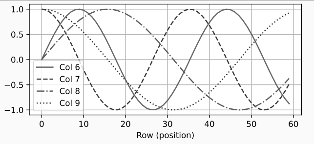
(Image taken from [8])
Self-Attention Layer
In a typical sentence there are words of more or less informational value.
You might say “Could you please put the food in the fridge”, but if the sentence would be reduced to “food in fridge” it would still be understandable.
If “Please don’t put the food in the fridge” means the opposite. That can be reduced to “Don’t food in fridge”.
A Self-Attention Layer helps a neural network focus on only the words of the highest informational value and removes the neccessary noise from human communcation.
Transformer
With the above we have a rough intuition of how the “Transformer” neural network works.
It forms the Basis of ChatGPT (Generative Pre-trained Transformer) and is much more efficient at generating text than the “Recurrent Neural Network”.
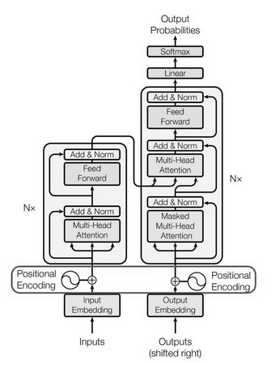
It combines the self-attention layer and positional encoding. That makes it much faster to train, the resulting model is smaller and the results at generating human-like text are improved.
Word2Vec
Words in a stream of text occur at relative positions to one another with a certain probability. The sentence “I am driving a …” will, with a high probability continue with “car”. The sentence could also continue with “boat”, but that’s less likely. Hence it’s always been subject to research to analyse the distances of words to one another.
In “force-field-analysis” the “forces” between the entities are used to position them in a high-dimenensional space. Combined with word distances we can position the words in a high-dimensional space. Intuitively this is equivalent to writing words on Post-It Notes and spreading them around the house - while putting similar words e.g. the weekdays, mode of transporation, etc… - in similar places.
The dimensions can then be reduced using “Principle Component Analysis” or the “Auto-Encoder” approach.
It turns out that if you do this with the words of a large collections of texts you can do algebraic calculations on text using the resulting positions.
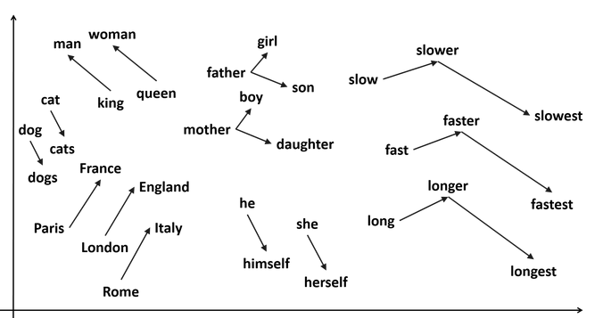
The most common example of uses are:
- “King - Man + Woman” yields “queen”
or
- “London - England + Italy” yields “Rome”
Algebraic Calculations with Words
I’ve simulated in 2D what the output of Word2Vec is capable of.
for this I manually set the values in 2D as they would come from a properly trained Word2Vec model
arr = [
(1, 5, "man"),
(2, 7, "woman"),
(2, 1, "king"),
(3, 3, "queen")
]
x = [x for (x, _, _) in arr]
y = [y for (_, y, _) in arr]
l = [l for (_, _, l) in arr]
then I can do the calculation
# queen = king - man + woman
queen_x = x[2] - x[0] + x[1]
queen_y = y[2] - y[0] + y[1]
and plotting that
%matplotlib inline
import matplotlib.pyplot as plt
plt.style.use('seaborn-whitegrid')
import numpy as np
plt.scatter(x, y, color='black');
for i, txt in enumerate(l):
plt.annotate(txt, (x[i]+0.1, y[i]+0.1))
plt.scatter(queen_x, queen_y, marker='X', color='black', s=300.0);
you wind up at “queen” (marked with an ‘X’) in the plot
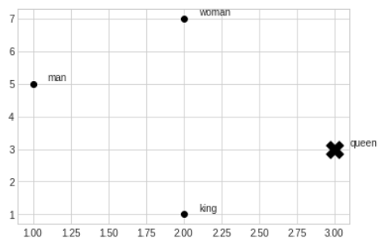
Input
As input I’ll use by notes. The gensim Word2Vec Python Library requires a special array structure. Aa list of sentences, with each sentence containing a list of words.
import glob
from nltk.tokenize import sent_tokenize, word_tokenize
import warnings
warnings.filterwarnings(action = 'ignore')
import gensim
from gensim.models import Word2Vec
import nltk
nltk.download('punkt')
NOTES_DIR = "<Notes Directory>"
note_files = glob.glob(NOTES_DIR + "**/*.md", recursive=True)
data = []
for note_file in note_files:
with open(note_file, encoding='utf-8', errors='ignore') as f:
text = f.read()
for sentence in sent_tokenize(text):
temp = []
for word in word_tokenize(sentence):
temp.append(word.lower())
data.append(temp)
Training
We can then create the model.
model = gensim.models.Word2Vec(data, min_count = 1, vector_size = 100, window = 5)
words = sorted(model.wv.key_to_index)
Implementation
The model can then be used to lookup word associations.
For example querying for the game “Anno 1800”
print(model.wv.most_similar(positive=['anno1800'], topn=40))
yields
assasins creed, doom, donkey kong, videospiele, minecraft, chicken nuggets, westworld, nudeln
Evaluation
It lists other games, mixed with foods - probably because I had some lists with video games I wanted to play and shopping lists.
print(model.wv.most_similar(positive=['frau', 'könig'], negative=['mann']))
The above example does not work well on my notes - I don’t have many mentions of the word “king” or “queen” in my texts.
It’s already impressive what Word2Vec can to with a limited amount of text.
Convolutional Neural Networks
Switching to image processing - there commonly kernels - a usually 3x3 matrix of values - that is shifted over an image is used. Each cell under the kernel from the source image is multiplied with the cell in the kernel and added to the cell of the output image.
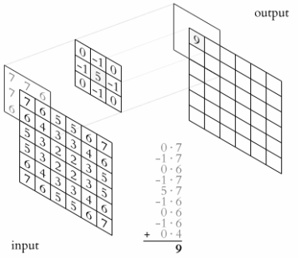
(Image taken from [10])
The approach makes sense for images as neighbouring pixels often have a strong relation to one another.
Applications of Kernels in practice have been to do Edge detection:
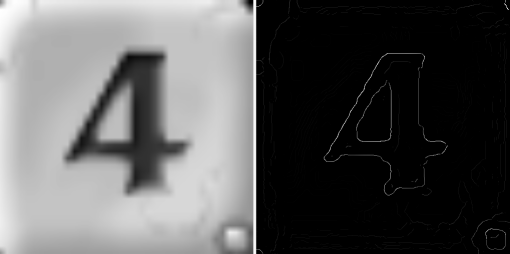
You can see how it reduces the amount of data, but still keeps the important informational value - that it is the digit 4 in this case.
It’s useful to use such convolutions in Neural Networks for image processing and this is done by adding “Convolutional Layers” where the Neurons are set-up in a way to mimic the application of a kernel to the input data.
Image Segmentation with U-Net
The U-Net is another Neural Net. It was developed for Image Segmentation. That is detecting the outlines of Objects in Images.
It was designed for biomedical images - as mentioned above “Medical Image Processing” is a big field in reasearch - , but generalized well to other images and outperformed all other known approaches.
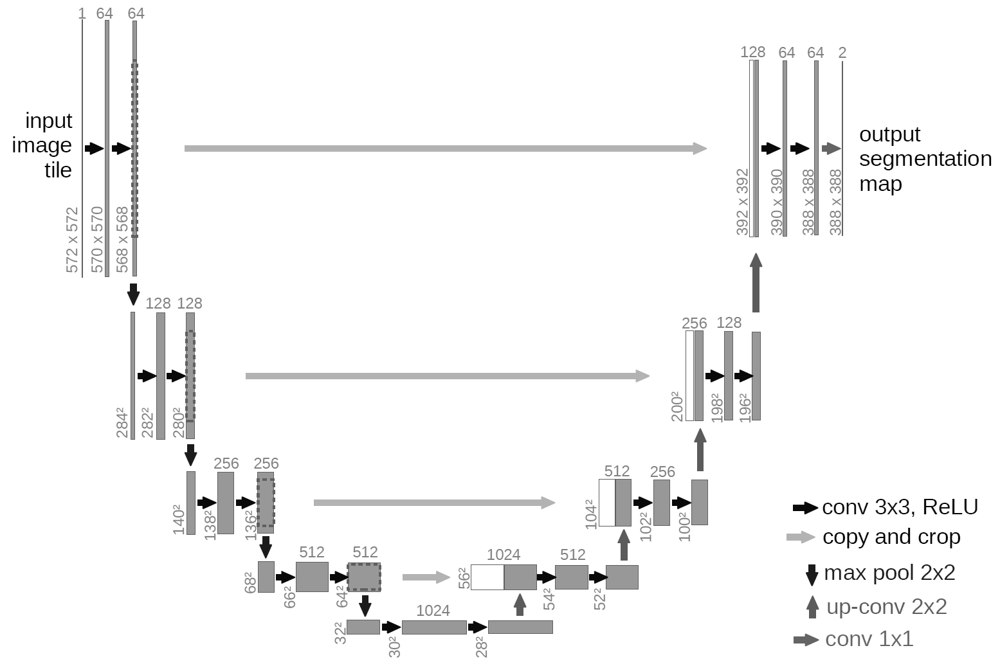
(Image taken from [11])
It uses multiple convolutions in sequence to first scale an image down and scale it back up. This is done to capture varying amounts of context from the image with a small convolution kernel.
The researches behind the approach show how well this works in a video on their homepage [11].
(Image taken from [11])
Diffusion
U-Net has also been employed to denoise images. During training the level of noise is added to the input images as a “Positional Encoding” (see above). The Network can then step by step remove the noise. With Diffusion new images that weren’t part of the training set can be generated.
How does Stable Diffusion work
All of the above vaguely explains how Stable Diffusion works.
- with Word2Vec we get a mapping of words into a high-dimensional space.
- with the Auto-Encoder we get the same for images.
- “Positional Embedding” helps correlate images and words from a labeled dataset.
- A self-attention layer make sure that we do this only on the most important words.
- The U-Net image segmentation denoising trick allows creating mixtures of images from noise that are guided into the direction of the text prompt.
Conclusion
There are really interesting tricks in the A.I. field that are useful to know about.
Every technique is a valuable tool in the toolbox for solving problems. I can see how the Image Segmentation with U-Net could improve SLAM Mapping. Word2Vec is already useful by itself for finding synonyms. Stable Diffusion has also become a valuable tool I use for inspiration for example when I’m designing icons for a smartphone app.
The best part is that all the code I’ve shown above runs on a reasonable powerful computer and can be run at home without access to high performance servers.
1] https://towardsdatascience.com/designing-your-neural-networks-a5e4617027ed 2] https://en.wikipedia.org/wiki/DeepDream 3] https://en.wikipedia.org/wiki/Gartner_hype_cycle 4] http://www.joyofdata.de/public/pca-3d/ 5] https://en.wikipedia.org/wiki/Support_vector_machine 6] https://de.wikipedia.org/wiki/Autoencoder#/media/Datei:Autoencoder_schema.png 7] https://machinelearningmastery.com/a-gentle-introduction-to-positional-encoding-in-transformer-models-part-1/ 8] https://paperswithcode.com/method/absolute-position-encodings 9] https://arxiv.org/abs/1706.03762 10] https://en.wikipedia.org/wiki/Kernel_(image_processing) 11] https://lmb.informatik.uni-freiburg.de/people/ronneber/u-net/ 12] https://www.youtube.com/watch?v=sFztPP9qPRc